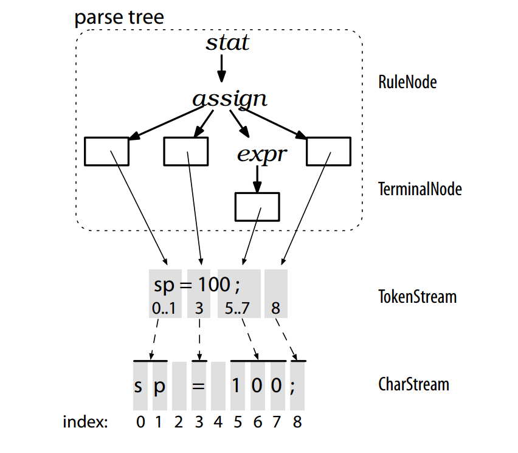
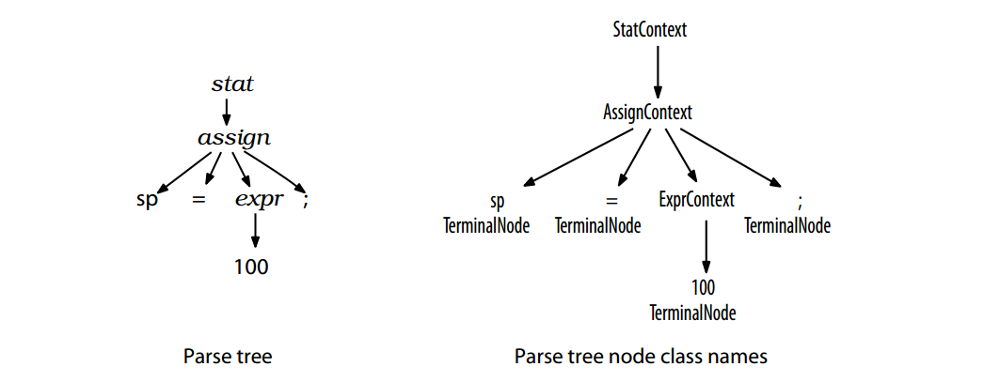

# ANTLR 4
### A (rather simple) Overview
Compilers
Faculdade de Engenharia da Universidade do Porto
## Outline
* Introduction to parsing with ANTLR 4
* Implementing Parsers
* Building Language Applications Using Parse Trees
* Parse-Tree Listeners and Visitors
* Use case: simple calculator
## What's ANTLR 4?
## What's ANTLR 4?
**ANTLR 4** is a parser generator, generating parse trees automatically from a given **grammar**.
It's a **parser generator** and a **language tool**.
## Design Goals
* Ease-of-use over performance
* Simplicity over complexity
## Industry adoption
* **Twitter** search uses ANTLR for query parsing.
* **Oracle** uses ANTLR within the SQL Developer IDE.
* The **NetBeans** IDE parses C++ with ANTLR.
## What does parsing with ANTLR4 mean?
### What does parsing with ANTLR4 mean?
* Structure is described as a **grammar**.
* Recognizer is divided into **lexer** and **parser**.
* **Parse tree** can be auto generated.
### What does parsing with ANTLR4 mean?

## Specify a grammar
## Specify a grammar
``` javascript
grammar assignment;
stat: ID '=' expr ';' // match an assignment; can match "f();"
| ID '=' expr ';' // oops! an exact duplicate of previous alternative
| expr ';' // expression statement
;
expr: ID '(' ')'
| INT
;
ID : [a-z]+ ; // match one or more of any lowercase letter
INT : [0-9]+ ; // match integers
```
The ANTLR tool generates recursive-descent parsers from grammar rules such as the ones above.
## ANTLR4 data structures
Lexers process characters and pass tokens to the parser, which in turn checks syntax and creates a parse tree.
The corresponding ANTLR classes are *CharStream*, *Lexer*, *Token*, *Parser*, and *ParseTree*.
ANTLR4 data structures

Generated Parse Tree

Parse-Tree Listeners and Visitors
Given this concrete structure, we can use the tree-walking mechanisms that ANTLR generates automatically, rather than writing the same tree-walking boilerplate code for each application.
## Parse-Tree Listeners and Visitors
Options for separation of actions from grammars in ANTLR4:
* Listeners (SAX style)
* Visitors (DOM style)
## Listeners
To walk a tree and trigger calls into a listener, ANTLR’s runtime provides class *ParseTreeWalker*.
To make a language application, we build a *ParseTreeListener* with application-specific code.
## Listeners

Tree traversal.
## Listeners

*ParseTreeWalker* call sequence.
## Visitors
We make use of the *visitor* interface when we want to control the walk itself, explicitly calling methods to visit children.
## Visitors

## Practical Example
### Building a Calculator Using a Visitor
## Practical Example